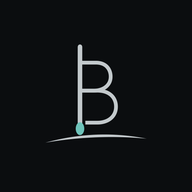

Bolero lets you control TuneBrowser or foobar2000 (music players for Windows) from your phone: play and pause, skip, seek, volume (with your phone's volume keys), the play queue, browsing your library, repeat and shuffle, and track details.
The app is free. Bolero Pro, a one-time in-app purchase, adds lock-screen controls, Wake-on-LAN, library search, copying music from your PC to your phone, and switching the PC's audio output — with both players.
User guide — setup, how to use, and troubleshooting.
No PC yet? Open the app and choose Try the demo to try everything, Pro features included, with sample music.
Bolero is an independent app and is not affiliated with the developers of TuneBrowser or foobar2000.
スマホ (Android) から PC の音楽プレーヤー TuneBrowser または foobar2000 を操作するリモコンアプリです。 再生・一時停止・曲送り・シーク・音量 (スマホの音量キーでも)・再生リスト・ライブラリの閲覧・リピートとシャッフル・曲の情報に対応しています。
アプリは無料です。アプリ内の買い切り「Bolero Pro」で、ロック画面からの操作・PC の起動 (Wake-on-LAN)・ライブラリの検索・PC の曲のスマホへのダウンロード・PC の出力先の切り替えが使えます (どちらのプレーヤーでも)。
使い方ガイド — セットアップ・使い方・困ったとき
使うには、TuneBrowser なら設定で OpenHome/UPnP を有効に、foobar2000 ならコンポーネント「Beefweb」を入れ、同じ PC で無料の PC 用サーバー「en-core」を起動してください (foobar2000 で検索・ダウンロード・出力先を使うには 0.8.8 以降)。スマホと PC は同じ Wi-Fi につなぎます。 PC が無くても、アプリの「PC なしで試す (デモ)」で、Pro の機能も含めて操作を試せます。
Bolero は TuneBrowser・foobar2000 の作者とは関係のない、独立した非公式アプリです。